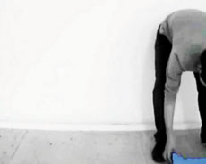
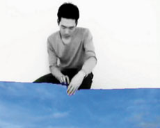
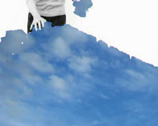

|
SEUNG-IL CHUNG
Geplanter Fehlschlag | 2008 | 4’09’’
Format: DV
www.seungilchung.com
www.flachware.de/seung-il-chung
Ich mache im Raum langsam ein großes Loch. Ein Himmel wird gebaut.
Seung-Il Chung, geb.1979 in Seoul / Südkorea. Lebt und arbeitet in München. Studium der Medienkunst an der Kaywon School of Art & Design in Südkorea. 2005 Gasthörer in der Bildhauerklasse an der Kunstakademie Düsseldorf. Seit 2006 Studium der Bildhauerei an der Akademie der Bildenden Künste München, seit 2010 Meisterschüler bei Prof. Magdalena Jetelová.

Ausstellungen (Auswahl): 2010 | Fünfte Architekturwoche A5, München | Jahresausstellung, AdBK, München | II Moskauer Internationale Biennale für junge Kunst, Moskau | Film Kunst, Filmsaal am Mariahilfplatz, München | 2009 | Rette sich wer kann, WhiteBox, München | Künstlerische Heimat, Fabrica Braço de Prata, Lissabon, Portugal | Senses 09, ZKMax, München | 18. Triennale Grenchen, Kunsthaus, Schweiz | "invasion, okkupation, transformation", Norwich, England | Der dialektische Kreislauf, Youngeun Museum, Südkorea | Wege aus dem Kapitalismus, Galerie Stephan Stumpf, München | 2008 | HEDIYE, Galerie Françoise Heitsch, München | Tirana München, Lothringer13, München 2007 | Austausch, Wyspa institut in Gdansk, Polen | Nic na odiv...?, Prag, Tschechien Nele Müller & Seung il Chung, AdBK, München | 2006 | You are so beautiful, London | Klasse Grünfeld, Städtische Galerie, Kaars | 2005 | World of Light Expo 2005, Südkorea
zurück
|